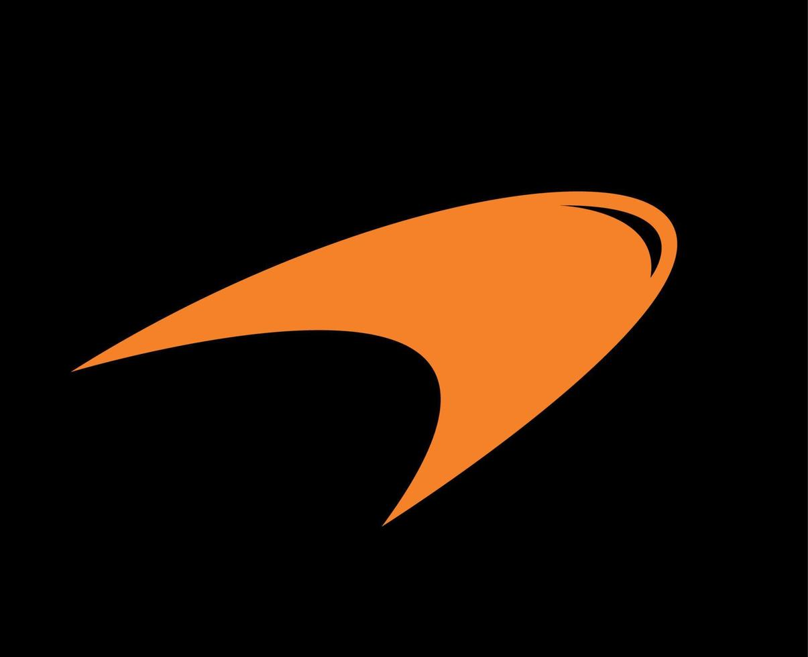

de geschiedenis van mclaren

.jpg) De historie van McLaren
Zowel het raceteam van McLaren als de Britse autofabrikant zijn al jaren een grote speler in de race- en autowereld. Iedereen kent team McLaren met bekende ex-coureurs als Ayrton Senna, Mika Häkkinen en Lewis Hamilton. De oprichting
Het raceteam van McLaren in de Formule 1 werd opgericht in 1963 en deed in 1966 voor het eerst mee aan de Grand Prix van Monaco. De Nieuw-Zeelander Bruce McLaren was al jaren actief als coureur in de F1 en besloot na enkele seizoenen van ontevredenheid over de auto zijn eigen team op te richten. Het nieuwe raceteam kreeg de naam Bruce McLaren Motor Racing en Bruce McLaren behaalde in 1968 de eerste overwinning voor het team tijdens de Grand Prix van België op Spa-Francorchamps. In de Amerikaanse Can-Am kampioenschappen heeft het team nog meer succes en zijn de coureurs oppermachtig en worden er veel meer overwinningen en podiumplaatsen behaald.
De historie van McLaren
Zowel het raceteam van McLaren als de Britse autofabrikant zijn al jaren een grote speler in de race- en autowereld. Iedereen kent team McLaren met bekende ex-coureurs als Ayrton Senna, Mika Häkkinen en Lewis Hamilton. De oprichting
Het raceteam van McLaren in de Formule 1 werd opgericht in 1963 en deed in 1966 voor het eerst mee aan de Grand Prix van Monaco. De Nieuw-Zeelander Bruce McLaren was al jaren actief als coureur in de F1 en besloot na enkele seizoenen van ontevredenheid over de auto zijn eigen team op te richten. Het nieuwe raceteam kreeg de naam Bruce McLaren Motor Racing en Bruce McLaren behaalde in 1968 de eerste overwinning voor het team tijdens de Grand Prix van België op Spa-Francorchamps. In de Amerikaanse Can-Am kampioenschappen heeft het team nog meer succes en zijn de coureurs oppermachtig en worden er veel meer overwinningen en podiumplaatsen behaald.
 TEAMLOGO'S De verrassende betekenis achter de logo's van de Formule 1-teams | GPFans Special De verrassende betekenis achter de logo's van de Formule 1-teams | GPFans SpecialFoto: © LAT Images Jan Bolscher Dinsdag 4 april 2023 15:25 - Laatste update: 10:02 Wie regelmatig naar de Formule 1 kijkt, kan ongetwijfeld blind invullen welk logo bij welk team hoort. Zo horen de twee rode stieren bij Red Bull Racing en het steigerend paard bij Ferrari. Maar veel van de formaties hebben een aantal ‘verborgen’ betekenissen in hun logo’s verwerkt zitten, neem bijvoorbeeld het golfje boven de 'N' in het McLaren-logo. In deze special nemen we het allemaal onder de loep. Red Bull Racing Niet alle teams hebben trouwens geheime of historische boodschappen in hun logo verwerkt zitten. Kijk bijvoorbeeld naar Red Bull Racing. Red Bull Racing is in 2005 opgericht door de afgelopen jaar helaas overleden Dietrich Mateschitz. De Oostenrijkse miljardair had 49% van de aandelen van het populaire energiedrankje Red Bull in handen. Je zal je dan ook niet afvragen waar de naam van het team van Max Verstappen en Sergio Perez vandaan komt. Hetzelfde geldt voor het logo. Deze bestaat uit twee rode stieren - oftewel Red Bull’s, - die tegenover elkaar staan. Wie die overige 51 procent van de aandelen in bezit heeft? De Thaise familie Yoovidhva. Zij zijn de oorspronkelijke bedenkers van het drankje. Ferrari Goed, Ferrari dan. Een zwart steigerend paard op een gele achtergrond, daar kan vast niet veel achter zitten, toch? Jazeker wel. Achter het logo van de Italiaanse grootmacht gaat namelijk een bult geschiedenis schuil. Het merk Ferrari is opgericht door Enzo Ferrari. Deze Italiaanse coureur heeft ook het logo bedacht, maar daar zit een bijzonder verhaal achter. Het steigerend paard is namelijk een eerbetoon aan Francesco Baracca, een in Italië legendarische gevechtsvliegtuigpiloot die tijdens de Eerste Wereldoorlog 34 zeges boekte met zijn team, totdat hij in 1918 uit de lucht werd geschoten en omkwam. Baracca stond onder andere bekend vanwege het feit dat hij altijd een rood steigerend paard op de zijkanten van zijn vliegtuig schilderde. Enzo nam het steigerend paard vervolgens als eerbetoon over in het Ferrari-logo. Hij veranderde de kleur van rood naar zwart, als symbool van rouw vanwege zijn overlijden. Mercedes Artikel gaat verder onder video En dan de Zilverpijlen: Mercedes-AMG PETRONAS F1 Team. Het tekstuele gedeelte is niet zo ingewikkeld. Mercedes staat uiteraard voor, inderdaad, Mercedes. AMG is de afdeling van Mercedes-Benz die zich bezighoudt met het optimaliseren van voertuigen en Petronas is de hoofdsponsor. Het logo zelf heeft wel een diepere betekenis. De drie punten van de omcirkelde ster zouden namelijk staan voor het feit dat de fabrikant motoren wilde ontwikkelen voor de drie gebieden van mobiliteit: Ter land, ter zee en in de lucht. McLaren We noemden het net al even kort, maar ook achter het logo van McLaren gaat meer schuil dan je denkt. De Britse grootmacht heeft een vrij eenvoudig logo. De naam uitgespeld inclusief een golfje boven de letter N. Over waar dit golfje vandaan komt, bestaan twee verhalen. Vroeger werkte McLaren namelijk samen met Marlboro, dat ook een dergelijk golfje in het logo had. McLaren zou dit simpelweg overgenomen hebben en met de tijd zou het het golfje van vandaag de dag geworden zijn. Een ander verhaal, eentje meer van deze tijd, is dat het golfje symbool zou staan voor de draaikolkjes die te zien zijn bij de achtervleugel als een Formule 1-auto in de windtunnel staat.